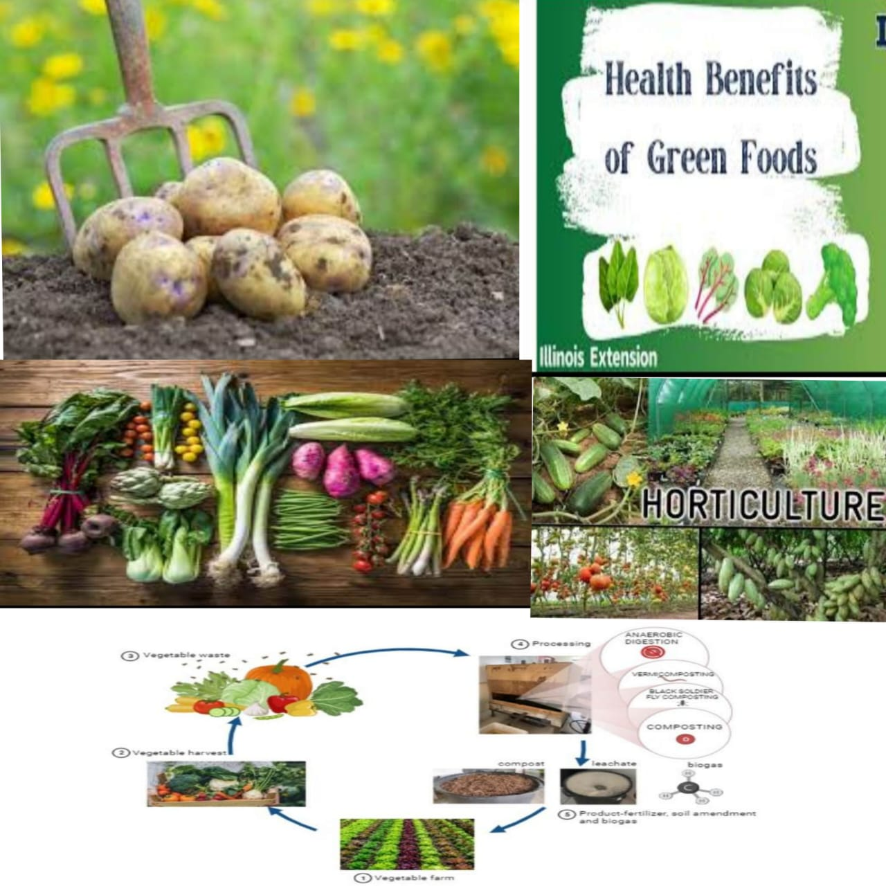

vegetables information
The vegrtable crops is growing of each vegetables is dealt with in detail,it will lead to too much repetition.It is,therefore desirable to classify vegitable crops into certaingroups as per their similarities.This will also help in Studying them easily.Based on the nature of plant
(stem).
(a)Herbaceous and Succulents:
(b)Shrubs:Brinjal,Chilli,tomato,etc.
(c)Trees:Drumstick,jackfruit,etc.
(d)Leafy Vegetables
(e)Vines:Cucurbits,etc.Based on the life span(from seed-to-seed)
(f)Biennials:The life span of biennials is of two seasons or two years,e.g.Onion,radish
(g)Sexually Propagated(by seed):Brinjal,chilli,cauliflower,cabbage,curcurbits,tamato,leafvegetables,etc.
(h)Asexually propagated(vegetative parts):Asparagus,dioscorea,potato,sweet potato,onion,garlic,taro,yam,etc.

Vegetables:Vegetables we can use the food perpose and waste food materials we can use the bio-gass,waste vegetables is use fertilizers etc....